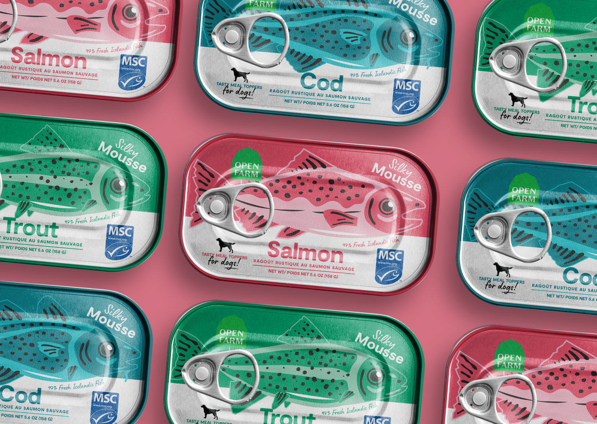
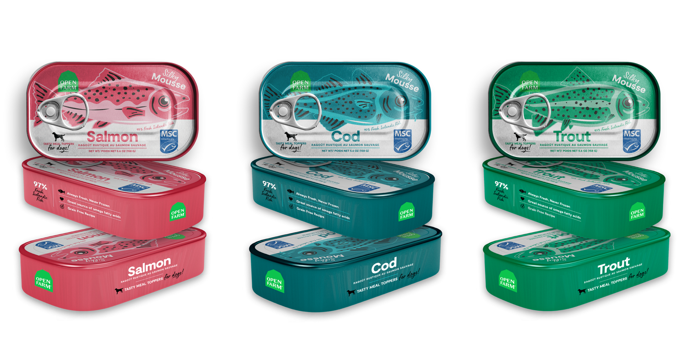
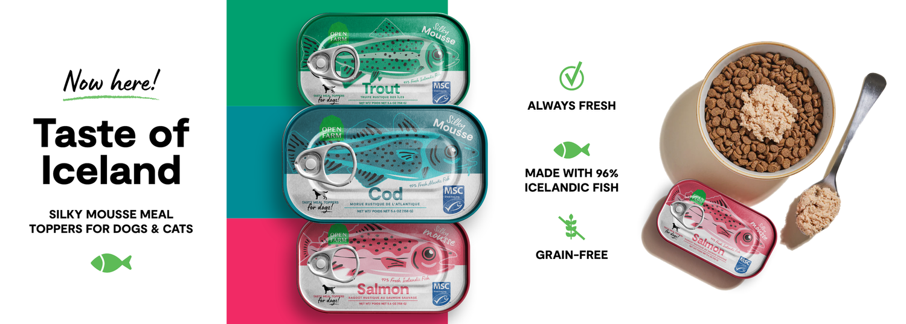
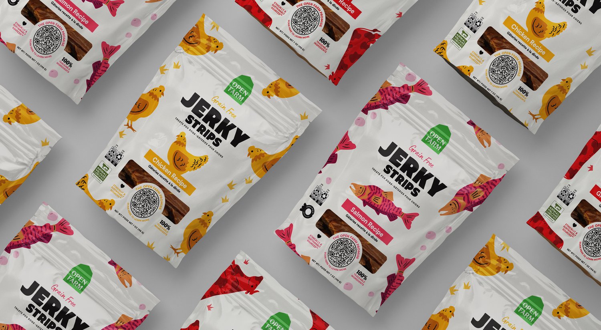
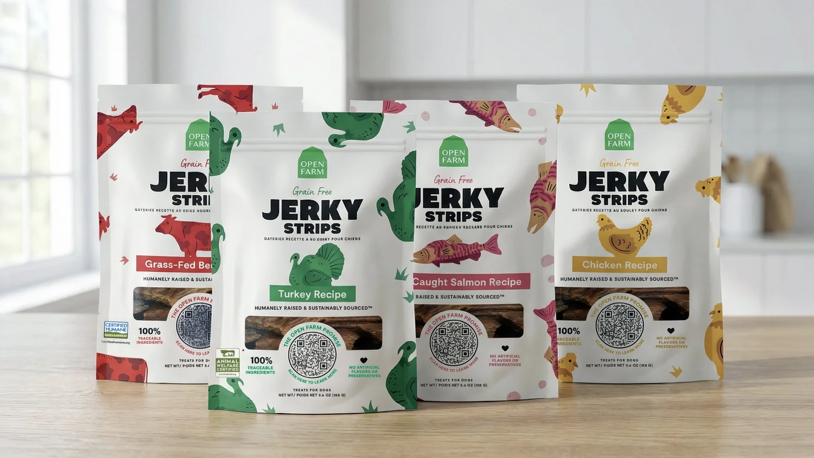
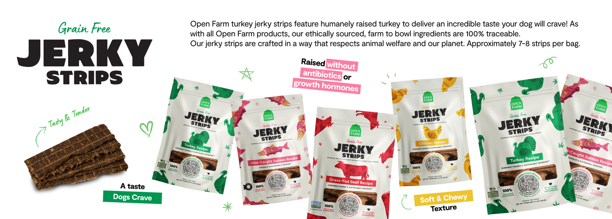
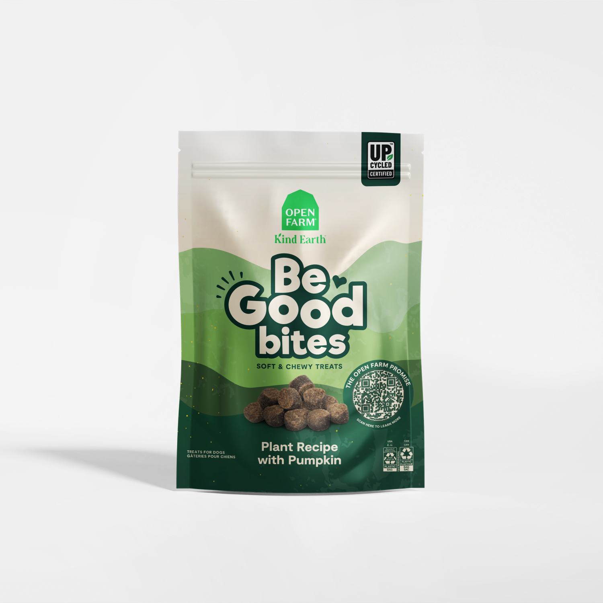
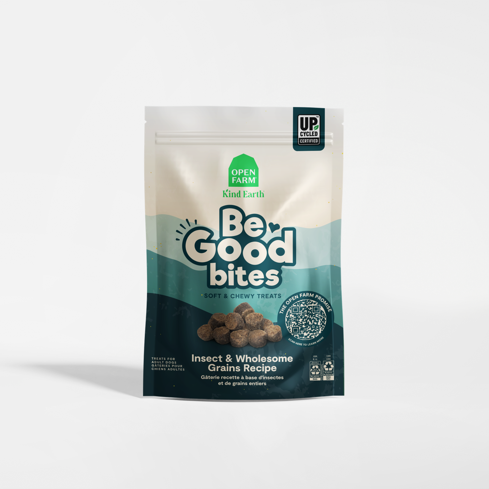
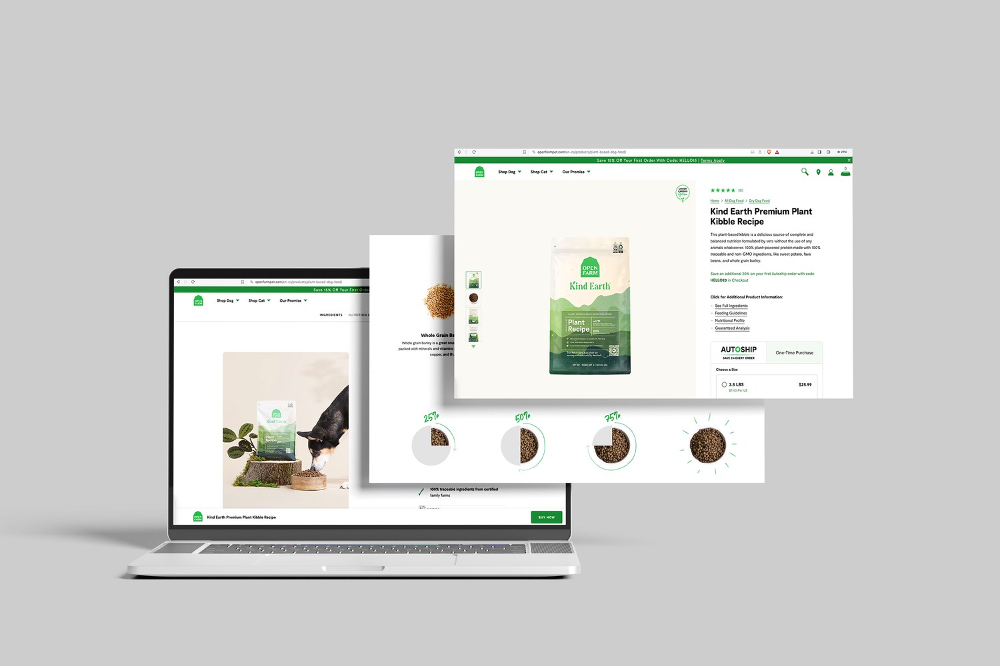

Portfolio › Open Farm
Open Farm

Bold innovation.
Breaking new ground, Open Farm proudly presents its first product in a "tuna can" packaging, redefining convenience without compromising quality. As the designer behind this bold venture, my mission was to infuse the brand's signature charm with a playful vibrancy.



Packaging design innovation for Canada’s fastest growing pet food company, Open Farm.
As a key contributor to Open Farm's journey, I've had the privilege of crafting packaging designs for their latest groundbreaking products. Balancing the brand's timeless aesthetic with vibrant, fun elements, each creation invites you to experience the harmony of tradition and modernity.
Jerky Strips packaging design embodies a delightful blend of familiarity and whimsy, staying true to the essence of Open Farm while infusing a playful charm befitting of its treats category. The task was to maintain brand cohesion while injecting a sense of fun and excitement into the packaging. Building upon the iconic animal silhouettes that define Open Farm's visual identity, Jerky Strips packaging introduces a vibrant array of colors and intricate details, transforming the familiar motifs into dynamic and engaging characters. This approach not only retains the brand's recognizable elements but also infuses the product with a distinct personality, making each flavor an irresistible treat for pets and owners alike.
Among the assortment of flavors, the salmon variant stands out as a shining star, garnering acclaim as one of Open Farm's top-selling items.




Be Good Bites™
As the inaugural offering in Open Farm's upcycled treats collection, Be Good Bites Kind Earth packaging needed to communicate both novelty and trust. The design strikes a delicate balance, utilizing clean lines and contemporary typography to convey modernity, while maintaining the brand's established visual language for a touch of familiarity.
This design represents a harmonious fusion of tradition and innovation, reflecting Open Farm's commitment to sustainable practices and natural ingredients. The challenge was to encapsulate the brand's essence—earthy yet modern—while introducing a pioneering product line.
